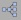
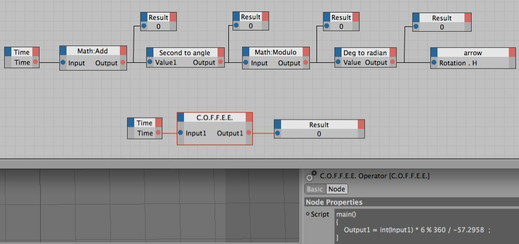

XPresso C.O.F.F.E.E.

I’m new at Cinema 4D (3 weeks when I wrote this). And XPresso and C.O.F.F.E.E only a few hours. But I used to be a programmer years ago. Yesterday I had the project of animating a clock. The movement of a quartz clock, not a continuous one (that would be too easy). It could be done manually by keyframing the rotation of the hands. But I told myself let’s learn a new part of C4D. I looked for an “XPresso for the Dummies” on the internet. Not much. So I experimented. Quite easy. But for someone without a programming background I can imagine the headache and discouragement. So, I decided it was time for a new section on Claude3D’s website.
So, create a clock hand (a pyramid would be fine). Right-click it in the object manager and attach to it an XPresso tag (in Cinema 4D Tags). Double-click
and you should get the XPresso Editor Window. On the left of the window select X-Pool>System Operators>XPresso. Under General & Calculate you will find everything necessary for the next example.
I’ll explain from left to right (the top row)
-
1.Time (General) returns (in seconds ex 0.05) the time of the present frame of your animation.
-
2.As I want my hand to rotate only every second Math: Add is just integer(time). My project setting is at 24frames/sec. So from frame 0 to 23 Result is going to stay at “0”. At frame 24 it’s going the change to “1”. That’s the top left value.
-
3.Second to angle - I want the hand to rotate 6º every second . So the math behind it is simply “Value1*6”
-
4.Math Modulo - Just in case you want an animation longer than 60 seconds. I do a modulo 360 of the rotation angle.
-
5.Deg to radian - Angles are expressed in radians so this conversion. ($1/-57.2958) . The “-” is because I want the rotation to be clockwise.
-
6.And finally I feed the result into my arrow Rotation H.
That’s a lot of steps for something really simple. If you are ready to jump into C.O.F.F.E.E. just under is the equivalent.
main()
{
Output1 = int(Input1) * 6 % 360 / -57.2958 ;
}
Hope it helped. Don’t hesitate to leave comments, suggestions and requests.
Thanks claude@claude3D.com

